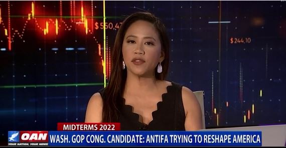

Wash.GOP Cong.candidate: Antifa trying to reshape America
America is always being reshaped.The USA of today is nothing like the USA of 1776 and the USA of 2276 will be nothing like the country of today.We can argue about whether or not the the business tax should be 20 or 30%.We can argue about whether or not states have to grant access to abortions.We CANNOT however argue about things like the right to bear arms, freedom of speech and religion and whether or not the borders should be secure.
Posted On: 2021-04-11T00:00:00
Posted By: inthebellyofthebeast
I fear that whatever is left of the USA in 2276 will be much like a third world nation
Posted On: 2021-04-11T00:00:00
Posted By: Dave
If it does it, will be very short.With the leftists eradicated we will prosper like never before.
Posted On: 2021-04-11T00:00:00
Posted By: redforrest1
'We CANNOT however argue about things like the right to bear arms, freedom of speech and religion and whether or not the borders should be secure.'
^ Sophistry.
People can and do argue about anything despite the poster's proclamations to the contrary.
People can and do argue about the issues the poster identified for any given circumstance -- especially about the poster's interpretations and understanding of those issues.
Posted On: 2021-04-11T00:00:00
Posted By: ← Face of Trump Style Fascism
Our founding fathers were very wise to leave us the Constitution you so despise
Posted On: 2021-04-12T00:00:00
Posted By: justme55
If we don't find the courage to act it may look a lot like China.
Posted On: 2021-04-11T00:00:00
Posted By: inthebellyofthebeast
Here's the $50,000 question.....exactly what will it take to get average American's up in arms?I fear that our nation will be too far gone before any actions occur.
Posted On: 2021-04-11T00:00:00
Posted By: Dave
It will take a leader and a platform so we can organize.
Posted On: 2021-04-11T00:00:00
Posted By: edithaz
Do you guys still want to string-up Trump's vice president?
Posted On: 2021-04-11T00:00:00
Posted By: ← Face of Trump Style Fascism
actually a brighter day would be seeing your eyes popping out of your horns
Posted On: 2021-04-11T00:00:00
Posted By: william corbin
Well that is the question how many people do you know that are willing to risk it all for change.How many do you know that will be willing to risk the relative comfort even under a despot like Biden to risk everything to change things?I say very few and that is why they get away with it.They want to disarm people not the criminals the citizens before it gets to that bad point where people just have nothing to lose than risk everything.
Posted On: 2021-04-11T00:00:00
Posted By: clmsadjman
I know in my instance going to work and providing for my family and employees is job one, until Dementia Joe's policies hurt my bottom line that's were I'll be
Posted On: 2021-04-11T00:00:00
Posted By: Dave
Quid Pro Joe has already hurt your bottom line!Look at what he is doing to your children's future!You are one of the people SAIL375 was talking about!Never served did you????????YES I served 1959, 60 and 61, Second Combat Engineer Bat.!!!!!
Posted On: 2021-04-11T00:00:00
Posted By: harleridr .
USAF vet, and small business owner for over 30 years
Posted On: 2021-04-12T00:00:00
Posted By: Dave
Americans don't have the balls like the great generation had.They died for America and Americans today won't even give up Facebook for her.Hell I'd shoot them too.
Posted On: 2021-04-11T00:00:00
Posted By: Jim Harrison
Its getting there by 2026!!!30 trillion in debt a sum of money that can never be paid off!!!You realize if you laid 30 trillion dollars end to end how far out in space that would reach probably a third the way to the next star system.
Posted On: 2021-04-11T00:00:00
Posted By: clmsadjman
Antifa could care less about reshaping the US.They only want to destroy it!
Posted On: 2021-04-11T00:00:00
Posted By: USA-Fubar
Well that would be reshaping it, now wouldn't it?
Posted On: 2021-04-12T00:00:00
Posted By: inthebellyofthebeast
This comment was deleted.
???So the truth is very foreign to you
Posted On: 2021-04-12T00:00:00
Posted By: justme55
Do I?
Posted On: 2021-04-12T00:00:00
Posted By: inthebellyofthebeast
I willing to shoot every member of Antifa.
Posted On: 2021-04-11T00:00:00
Posted By: T D
Easier to just do a napalm drop when they're staging
Posted On: 2021-04-11T00:00:00
Posted By: Retired
Fascist much?
Posted On: 2021-04-11T00:00:00
Posted By: Hammertime
Antifa are actual fascists.
Posted On: 2021-04-11T00:00:00
Posted By: Rex Harrison
Rex, you and I both know that antifa means ANTI fascist!Furthermore, Hammertime's accurate depiction of TD's terrible content as 'fascist' itself was incredibly accurate.I'll remind you of the dictionary definition of fascism: 'a form of far-right, authoritarian ultranationalism characterized by dictatorial power, forcible suppression of opposition'!
Posted On: 2021-04-11T00:00:00
Posted By: Aunty Anne Tifa
Antifa is fascist, cupcake.No more modern ahistorical definitions needed here;)
Posted On: 2021-04-11T00:00:00
Posted By: Gavin231
TROLL ALERT TROLL ALERT
Please do not feed this AUNTY ANNE troll!
To those of you who still feel the need to feed this ANTY TROLL here!
Proverbs 26:4 tells us not to answer a fool according to his folly lest we be like him.
Mark TWAIN 'Never argue with a fool, onlookers may not be able to tell the difference.'
George Carlin ' Wise men speak because they have something to say; Fools because they have to say something.'
Mark Twain 'It's better to keep your mouth shut and appear stupid than open it and remove all doubt'
Posted On: 2021-04-11T00:00:00
Posted By: harleridr .
There's nothing ahistorical about actually documented historical fact.Look any of this up in ANY encyclopedia or any dictionary (with the obvious exceptions of far-right spaces like the Koch-funded FEE which has a vested interest in its own particular ahistorical revisionism, and tries to rewrite history from a specific far-right apologist perspective...) 1/ Fascism is an overwhelmingly far-right phenomenon.2/ Antifa is, by definition, ANTI fascist.
Let me spell it out for you... Antifa = anti-fascist.Fascist = far-right extremism.Anti-antifa = far-right extremism.Antifa = left.
Posted On: 2021-04-11T00:00:00
Posted By: Aunty Anne Tifa
Repeating a lie does not make it true
Posted On: 2021-04-12T00:00:00
Posted By: justme55
That is wrong.You have no clue at all.Most conservatives are Christians and follow Jesus and His teachings.He forbids fascism.He is all about freedom
Posted On: 2021-04-11T00:00:00
Posted By: justme55
Firstly, it's nonsensical to say 'Jesus forbids fascism'.Fascism is a word in common usage perhaps not more than 200 years.That's 1800 years after Jesus.Secondly, you might have misunderstood my post.I said I was against fascism.And on one point I would agree with you... the hatred and ultranationalism of fascism would have been anathema to the teachings of love and acceptance given to us by Jesus.
Ultimately, I don't see what point you are trying to make.Yes, we should oppose fascism.That should have been obvious from my post.And no, the racism and ultranationalism of fascism are not in line with Christianity.On which part of my post are you claiming that I'm 'wrong'??
Posted On: 2021-04-11T00:00:00
Posted By: Aunty Anne Tifa
If you bother to read the Bible, Jesus forbids what fascism is.He is all about freedom, which comes from God.And you are accusing conservatives of being fascist which is a LIE!!!!!!!
Posted On: 2021-04-12T00:00:00
Posted By: justme55
Firstly, I never said 'all conservatives are fascist'.That would be as absurd as saying all people on the left are communist.I am on the left and I am not communist.I said fascism is a far-right ideology, just as communism is a far-left ideology.
Secondly, to say 'Jesus is all about freedom' is an insulting over-simplification of His message.He is also, for instance, about social justice.Read Proverbs: 'Whoever oppresses a poor man insults his Maker, but he who is generous to the needy honors him. '
Posted On: 2021-04-12T00:00:00
Posted By: Aunty Anne Tifa
Freedom comes from God who gave it to us
Posted On: 2021-04-13T00:00:00
Posted By: justme55
So Antifa is the far right terrorist organization Pelosi has been warning us about.
Posted On: 2021-04-11T00:00:00
Posted By: edithaz
No...Let me spell it out for you, so even you can understand, edithaz... Antifa = anti-fascist.Fascist = far-right extremism.Anti-antifa = far-right extremism.Antifa = left.Making sense in those slow-syncing synapses, yet?
Posted On: 2021-04-11T00:00:00
Posted By: Aunty Anne Tifa
NOTHING you said makes sense.It is the commie demoncrats who are the fascists.Fascism stands for a centralized autocratic government headed by a dictatorial leader, severe economic and social regimentation, and forcible suppression of opposition.It is the vile deomoncrats who want TOTAL CONTROL.
Posted On: 2021-04-11T00:00:00
Posted By: justme55
To say the Democrats are 'fascist' is not only nonsense.It overlooks the fact that the US under DJT was far closer to a 1930s brand of Italian fascism than at any other time in our history.
Tell me... which Democrat policies do you regard as fascist?Their efforts to send $2,000 stimulus checks to most Americans suffering from a difficult 2020?Their policy to give more aid for cities and state?Their policy to provide affordable health care to all Americans?Their desire to catch up to the rest of the world in supporting renewable energy?Their efforts to lift poor Americans above the poverty line by establishing a reasonable minimum wage?
Posted On: 2021-04-11T00:00:00
Posted By: Aunty Anne Tifa
'To say the Democrats are 'fascist' is not only nonsense.'Putting aside the fact this is a hanging sentence; you are absolutely correct.They are not the best example of Fascists.
They are communists.
The rest of your statement such blatant and thoughtless regurgitation of the Party Line that it does not merit response.You are, as are all leftists, simply incapable of understanding how ridiculous you sound.
Posted On: 2021-04-11T00:00:00
Posted By: louisleftypounder
That is false.PRES.Trump loves this country and is all about freedom.Sorry you are so brainwashed by the commie demoncrats you can't see the truth
Posted On: 2021-04-12T00:00:00
Posted By: justme55
You realise that 'commie' as you call me (and you're wrong there, too) is the opposite of fascism?You called the Dems fascist and now you call them 'commie'.Which is it?And you STILL haven't told me which Democrat policies you regard as fascist... Their efforts to send $2,000 stimulus checks to most Americans suffering from a difficult 2020?Their policy to give more aid for cities and state?Their policy to provide affordable health care to all Americans?Their desire to catch up to the rest of the world in supporting renewable energy?Their efforts to lift poor Americans above the poverty line by establishing a reasonable minimum wage?
Posted On: 2021-04-12T00:00:00
Posted By: Aunty Anne Tifa
Both fascism and communism are all about total control of the people, which is the goal of the democrat party.Republicans are all about freedom and the Constitution.Democrats want to gain total control and do away with the Constitution.They are in bed with the CCP.Sorry you have no clue about the agenda of your own commie demoncrat party
Posted On: 2021-04-13T00:00:00
Posted By: justme55
Please ensure that you tell the truth, and please ensure that you do not waste your precious time on this Earth defending white nationalists like Trump or like those media outlets telling you the lie that Democrat = control and GOP = freedom.This is a lie that ignores the oppression of the poor and of people of colour under Trump and under the GOP.Remember that the Lord tells us to avoid 'a lying tongue, and hands that shed innocent blood, a heart that devises wicked plans, feet that make haste to run to evil, a false witness who breathes out lies, and one who sows discord among brothers'.Those who tell lies about people with good intent, those who defend ill-intentioned MAGAs who participated in the January 6th insurrection, those who try to sew discord by pretending their opponents are evil (or CCP or whatever lies you're telling yourself) fit all of these categories.
Posted On: 2021-04-13T00:00:00
Posted By: Aunty Anne Tifa
What I said is the truth.Nothing you said is true.You are so indoctrinated you don't even suspect the truth
Posted On: 2021-04-12T00:00:00
Posted By: justme55
Just because Antifa uses that name, or any other, does not mean they are NECESSARILY not fascists.And your dictionary is different, perhaps uniquely so.Fascists are part of the political spectrum, and on the statist left.The left consists of socialists, communists, AND fascists because they all believe it is the STATE that has the right to run the lives of its subjects.The political right, conversely, believes in limited government, individual rights (and responsibilities) and minimizing the power of the STATE so freedom can flourish.The left wants to run and control everything.The right wants people in control of their own lives.Aunty Anne Tifa, did you get all of your knowledge of history from that vile, deceitful screed made up by the self-professed communist Howard Zinn?Don't you know it was debunked as fiction by all of his peers?It had no footnotes, attribution, citations or references to previous scholarly volumes.Aunty Anne Tifa, obviously you're selling a bunch of re-definitions, but I'm not buying it.That ship has sailed.Elvis has left the building.The Antifa group was formed when, where, and by whom?Please, look it up.Oh wait, you're probably a leftist ideologue, therefore allergic to facts, science or reason.With the left it's 100% lies, propaganda, and 'spin' 24-7-365.25.If that fails then its violence, mayhem, rioting, murder, and arson.Evil is as evil does.'For those who do evil is reserved the outer darkness.'
Posted On: 2021-04-11T00:00:00
Posted By: Ravensloft89
Aunty, this is from Webster's unbiased dictionary !YOU are blocked for making untruthful comments as well as being a TROLL!
1often capitalized : a political philosophy, movement, or regime (such as that of the Fascisti) that exalts nation and often race above the individual and that stands for a centralized autocratic government headed by a dictatorial leader, severe economic and social regimentation, and forcible suppression of opposition!
With this in mind, NO mention of far right!It does say, FORCIBLE SUPPRESSION OF OPPOSITION!!Which is exactly what antifa is doing!
Posted On: 2021-04-11T00:00:00
Posted By: harleridr .
I do love catching people out on blatant lying, harleridr.You have cherry-picked phrases from Websters that make you own (very tenuous) point look a little less absurd and deliberately left out that which outright contradicts you.You deliberately omitted the phrase that is the cornerstone of many typically right wing comments on this and other right wing sites: 'opposed to democracy and liberalism'.You also omitted the very typically Trumpist ideals of being 'strongly nationalistic appeal, often mixed with racism'.
One further click (still on Websters) reveals this sentence as a definition of a fascist: 'an adherent of fascism or similar right-wing authoritarian views.'
Now, if you don't feel you have the guts to apologise for your lie, harleridr, at least have the guts to admit your blatant (and clearly verifiable) untruth!
Posted On: 2021-04-12T00:00:00
Posted By: Aunty Anne Tifa
???You have no clue.NONE.Nothing you said is true.You are a FOOL who comes here to attack anyone you do not agree with.You just hate.Very sad
Posted On: 2021-04-12T00:00:00
Posted By: justme55
You sure are.
Posted On: 2021-04-11T00:00:00
Posted By: WHOOP ASS

Content Date: n/a
Download Date: 2021-04-16
Document ID: L0C049YFW